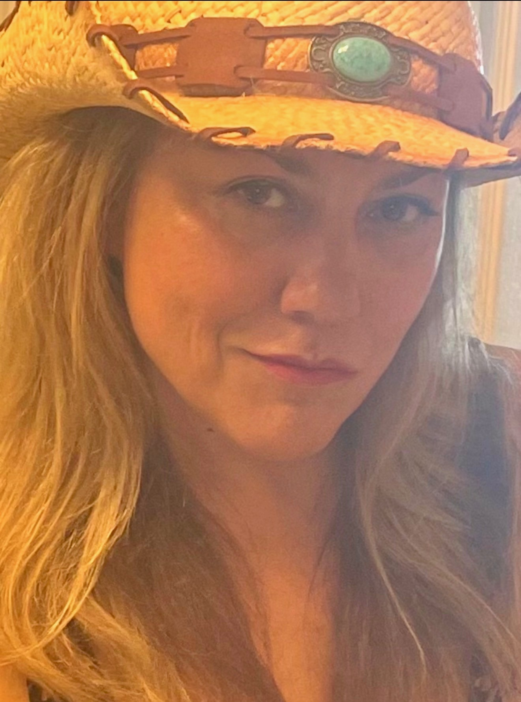
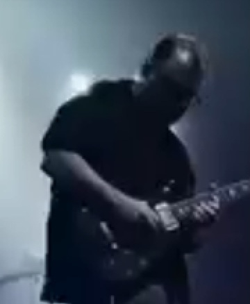
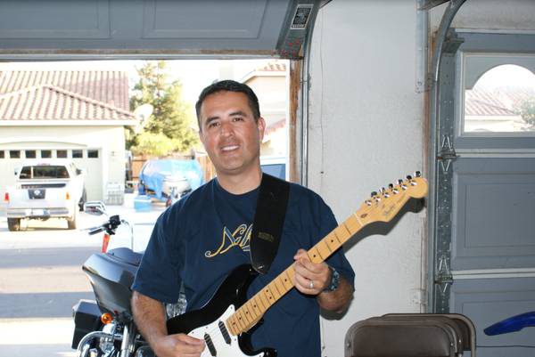
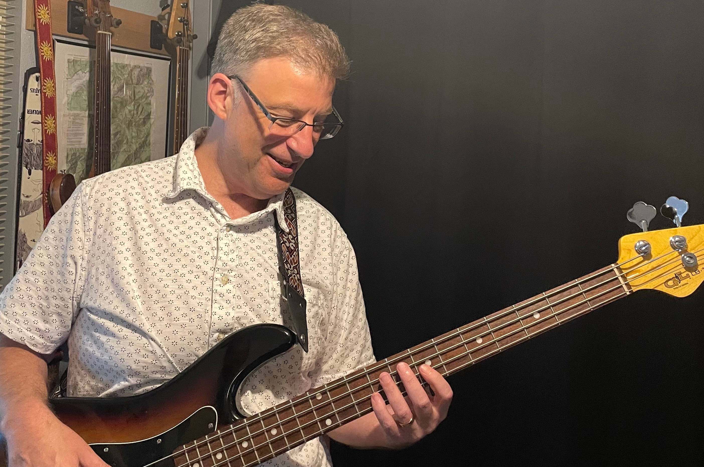
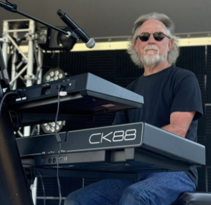

Meet The Band

Gigi
Lead Vocals
Gigi started her passion for music at an early age, singing along to sound tracks from musicals: Sound of Music; A Star is Born; Grease to a variety of vocal artists: Barbara Streisand; Ann Wilson; Whitney Houston; Pat Benatar, Linda Ronstadt, to name a few. Gigi has been performing on and off stage since she was a little girl (music and dance) and recently jumped back on after a 30+ year break, joining other enthusiastic musicians, since 2021, to perform a variety of popular fan favorites. "It's never too late to Rock-N-Roll!"

Kirk
Lead Guitar
The classic rocker, Kirk is originally from East Los Angeles and transplanted to Fairfield where he now calls home for almost 40 years. Kirk's the wizard on the 6 string. Kirk plays PRS guitars and Kemper amplifiers.

Ed
Rhythm Guitar
Born and raised in the sunset district of San Francisco Ca, Ed is a rhythm guitarist with many influences that motivated him to play in several bands during his lifetime. His love of music and motorcycles became a hobby he just can't quit. He has called Vacaville Ca. home since 2000 and is now retired enjoying life making music with friends.

Charles
Bass Guitar
Growing up on the war-torn streets of Stockton, California, multi-instrumentalist* Charles Bookman honed his musical chops by playing with such musical acts as the Deftones, Cake, and Jackson Browne.. on his turntable. Charles currently works for The Man while living with his family in west Davis. He is currently indentured to three cats. *4 String, 5 String, and 6 String Bass

Chris
Drums
Chris is originally a guitar player but has switched to drums and has been at it for the last 22 years. He is originally from the Santa Cruz, CA area where he has played in many bands over the years. He has recently retired from work and currently resides in Vallejo, CA. He has also played for several bands out of Vacaville, CA and plays Gretsch, Yamaha and Pearl drum kits.

Glenn
Keyboards
At the early age of 60, Glenn got his first guitar and with help from a few friends/YouTube learned a few chords and his journey started. He played with a basement band, simply jamming and never played live. He has a passion for learning to play music and loves the challenge. One day in 2021, he was jamming with a friend who had a keyboard in his studio and Glenn tried to play it. Well, one thing led to another and now Glenn is playing keyboards and in a live band. He plays a Yamaha CK 88 and a Roland Juno DS. Growing up in the 60s he's experienced some of the best bands/music, he's a Classic Rocker. He's a lifelong resident of Vacaville and retired in 2020, after a successful 40 year career in the Financial Services industry.